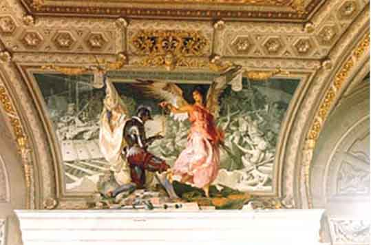

|
ローマではテルミニ駅でポン引きに誘われるまま安ホテルに泊まっていた。毎日今日こそは別のホテルに移ろう と思いながら同じホテルに泊まっていた。その年は猛暑でローマも結構暑かった。その日はホテルを後にして朝８ 時頃から１７時頃までバチカン美術館に１日中いた。最初入ったら、所要時間毎にコースが設定されていた。当初  から１日かけて見るつもりだったので１日コースを選び見て回った。流石に美術点数が多く、急いで回らないと回 りきれない物があった。ある回廊の天井を見ると、絵と実物の境界線が分からない不思議な絵に見入ってしまった。 ここにその写真を載せていますが、どこが実物でどこから絵か分かるでしょうか。その日は疲れ、暑さで食欲が無くなっていたので中華料理店に夕食を取りに入った。帰りがけで進行方向右側の店に入った。 食事を済ませ、店を出て右に曲がりホテルへの岐路を急ぐ、だんだん通りが暗くなり人気が無くなる。どこかで間 違えていることは分かったが、店に戻る元気がなくなっている。歩けば何とかなるだろう、タクシーでも捕まえよ うと思いながら歩くがどうも町からどんどん離れる感じがする。街頭は少なく人通りも少ない、こんな所で暴漢に あったらたまらない、不安が募ってきた。どうしよう。 ふと、前方を見たらドアが明るい所があった。そこで何とかなるかなと思い近づくと他のホテルであった。ほっ とした、エジプトでの経験からホテルのレセプションなら頼りになる事を知っている。レセプションで道に迷って しまった、これこれのホテルに行きたいと伝えた。地図を出してきて、今お前はここにいるから、この道を戻り、 ここを曲がれば直ぐだと教えてくれた。 道を間違えた場所はやはり中華料理店であった。入るときに進行方向右側と思ったのが間違いで左側の店だった。 だから店を出て反対方向に向かっていたのでした。でも、晩の８時過ぎに暗い夜道を一人で歩くのは本当に不気味 で怖かった、これが最初で最後の危ない失敗でした。 ２００１年１０月 ４日 記
|